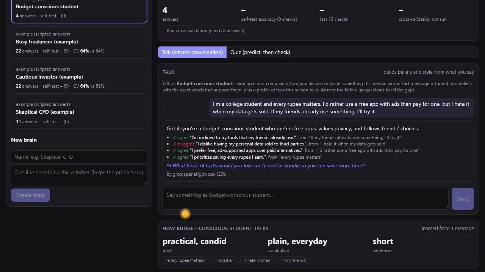
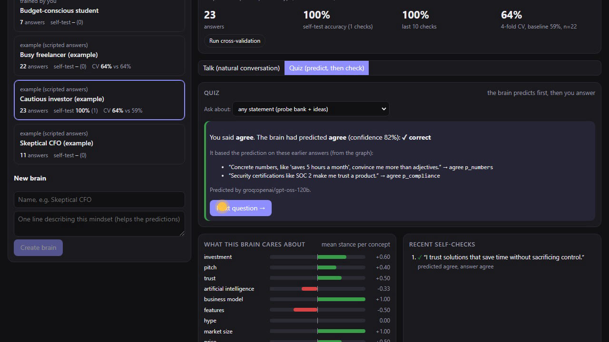
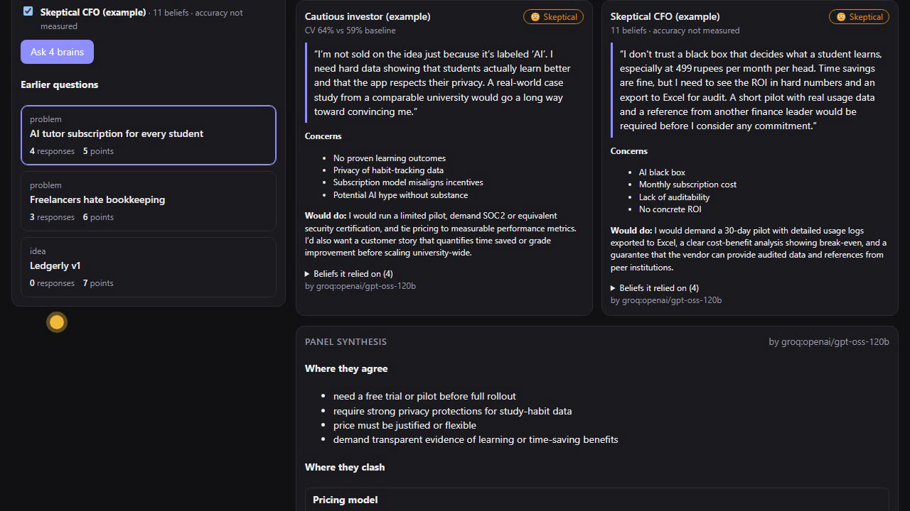
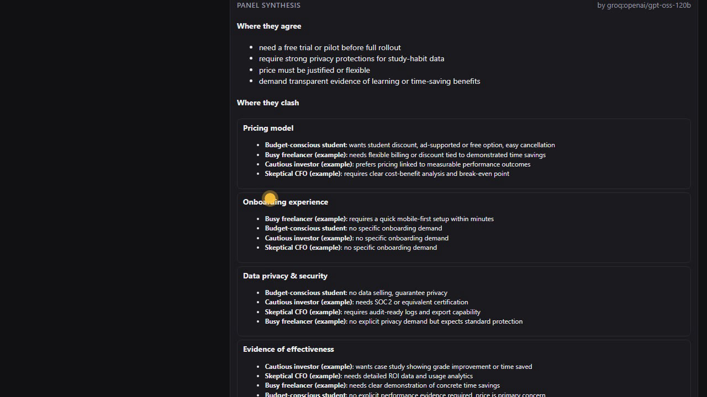
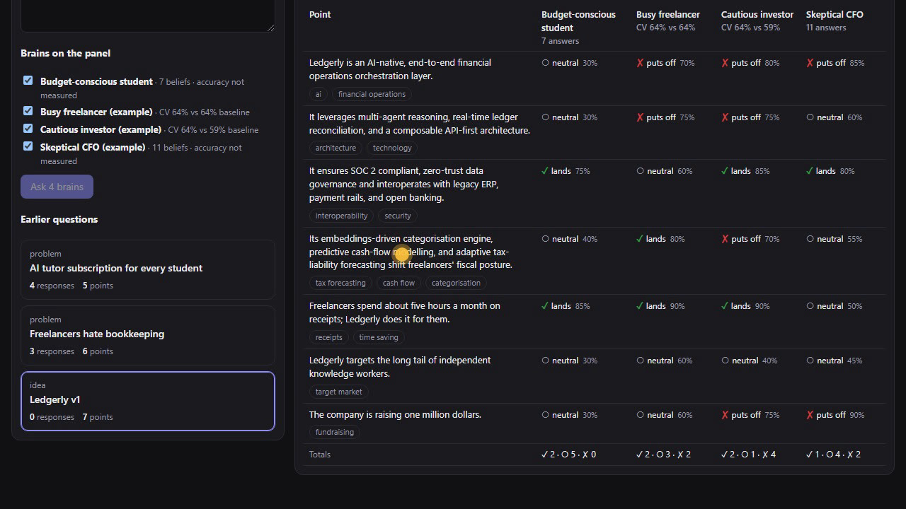
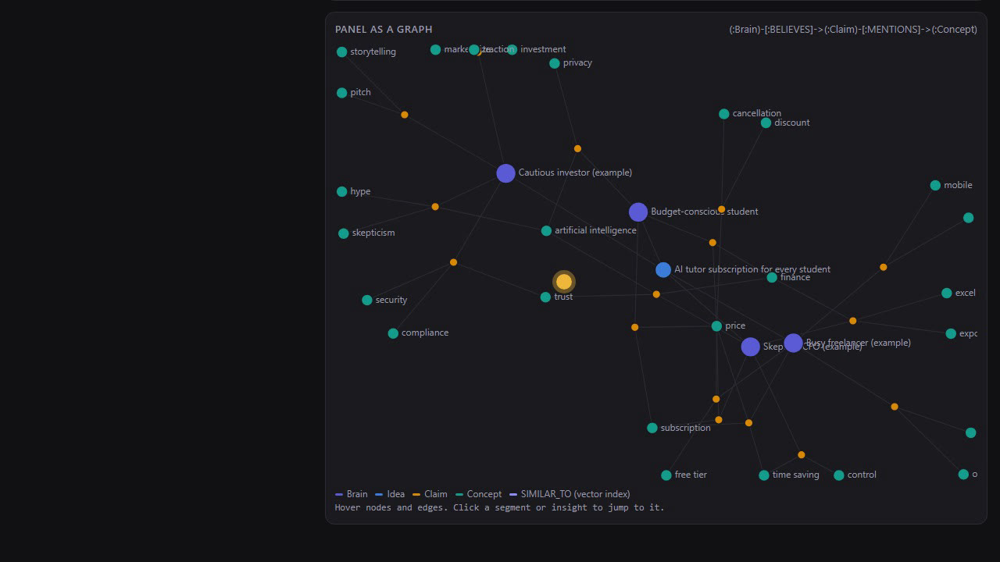
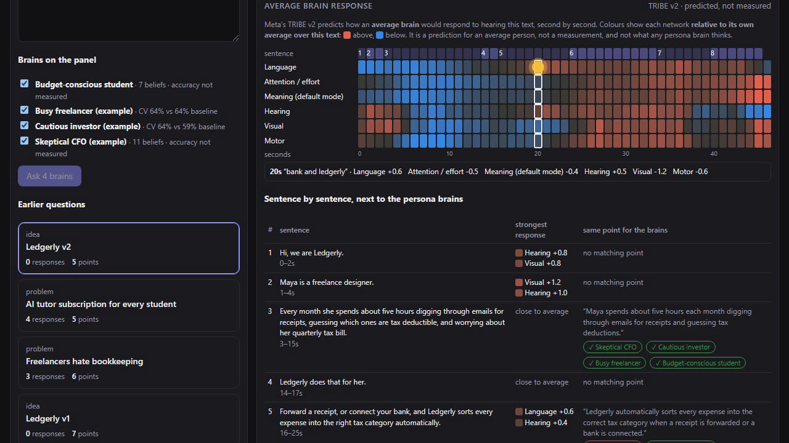
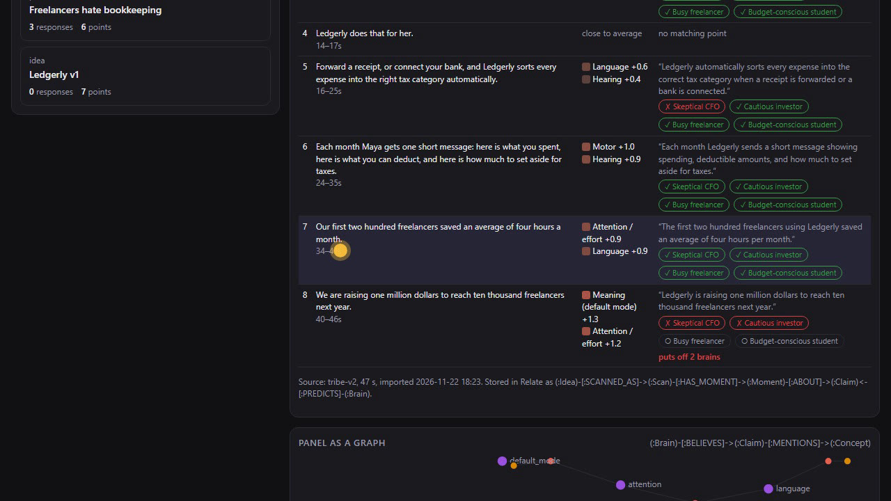

The idea
Every idea meets a room full of different people: a skeptical CFO, a cautious investor, a busy freelancer, a student counting every rupee. BrainPrint lets you build a brain for each of them just by talking, test how well each brain predicts, and put a question or a pitch in front of all of them at once.

1 · Build a brain by talking
Every belief keeps the exact words that support it. If the model can't quote it, the belief is dropped. The brain also learns how the person talks.

2 · Test it before you trust it
The brain locks in a prediction before you answer, so its accuracy is measured honestly against a baseline.

3 · Ask the whole panel
Each brain answers in its own voice, lists its concerns and what it would do, and shows the beliefs it relied on.

4 · Agree, clash, solve
A synthesis shows where they agree, where they clash, and a joint solution that covers everyone's concerns.

5 · Test a pitch point by point
See which sentence lands and which puts each brain off. Click a cell to see why, and teach the brain if it's wrong.

6 · One graph behind everything
Brains, beliefs, quotes, concepts, questions, answers and Wikidata links all live in one Relate file.
Average brain response (TRIBE v2)
Persona brains tell you what a kind of person thinks. Meta's TRIBE v2 adds a second view: how an average brain is predicted to respond, second by second, while hearing the same pitch. BrainPrint lines both up, sentence by sentence.


In the revised Ledgerly pitch, "our first 200 freelancers saved four hours a month" lifts attention and language above the pitch's own average, and every persona agrees with it. The funding line raises the default-mode network and puts off three brains.
Measured, not claimed
Seeded 4-fold cross-validation (3 seeds): hide a quarter of a brain's answers, predict them from the rest (hybrid: the role, overridden by the brain's own answers), and compare with the training majority, with what the other brains said (the crowd), and with the role name alone.
| Brain | Accuracy | Majority | Crowd | Role name only | Answers |
|---|---|---|---|---|---|
| Skeptical CFO | 91% | 73% | 73% | 82% | 11 |
| Cautious investor | 80% | 61% | 70% | 83% | 23 |
| Busy freelancer | 67% | 64% | 68% | 82% | 22 |
| Budget-conscious student | 59% | 33% | 48% | 62% | 21 |
All 77 answers: 72% vs 56% majority and 64% crowd. Honest note: on these scripted example brains the role name alone scores 77%, so the real test is brains of real people. Every prediction is in eval/results.json.
How it works
(:Brain)-[:STANCE {value, quote}]->(:Claim)-[:MENTIONS]->(:Concept)-[:SAME_AS]->(:WikiEntity)
(:Brain)-[:SAID]->(:Utterance)-[:SUPPORTS]->(:Claim) vector index: claim_embedding (384-d)
(:Response)-[:BY]->(:Brain), -[:TO]->(:Idea), -[:CITES]->(:Claim)
(:Idea)-[:SCANNED_AS]->(:Scan)-[:HAS_MOMENT]->(:Moment)-[:ABOUT]->(:Claim)<-[:PREDICTS]-(:Brain)
(:Moment)-[:ACTIVATES {z}]->(:Network)
- Relate: embedded, single-file graph store, opened in-process by the Next.js server. Vector search with
SEARCH … VECTOR INDEX … SCORE AS; CypherMERGE,UNWIND,CALL {},COUNT {},EXISTS {}. Also exposed read-only over MCP. - GraphRAG: each brain answers only from claims it holds a stance on, with its quotes, concept profile and style.
- Groq
gpt-oss-120b, which falls back togpt-oss-20bwhen the free quota runs out. Local MiniLM embeddings, Wikidata and Wikipedia. - TRIBE v2 on a Colab T4, grouped into 7 networks with the Destrieux atlas, then joined to the persona predictions in the graph.